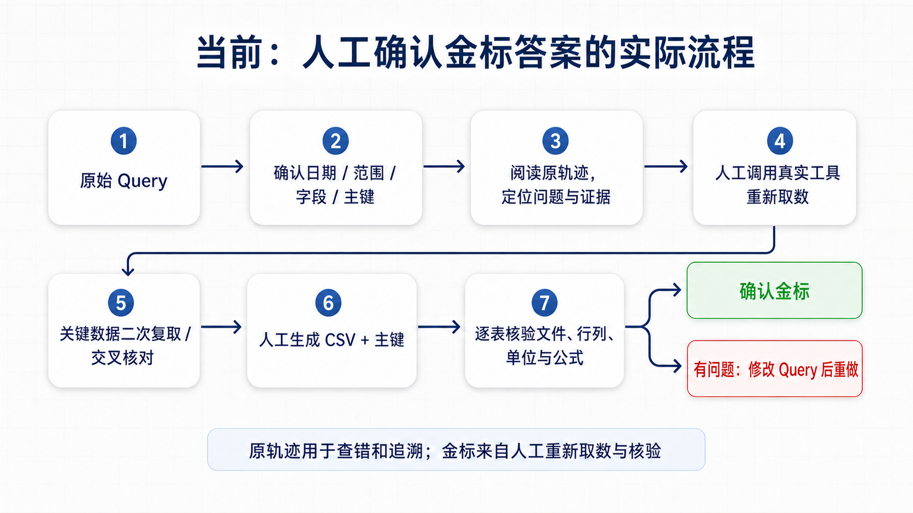
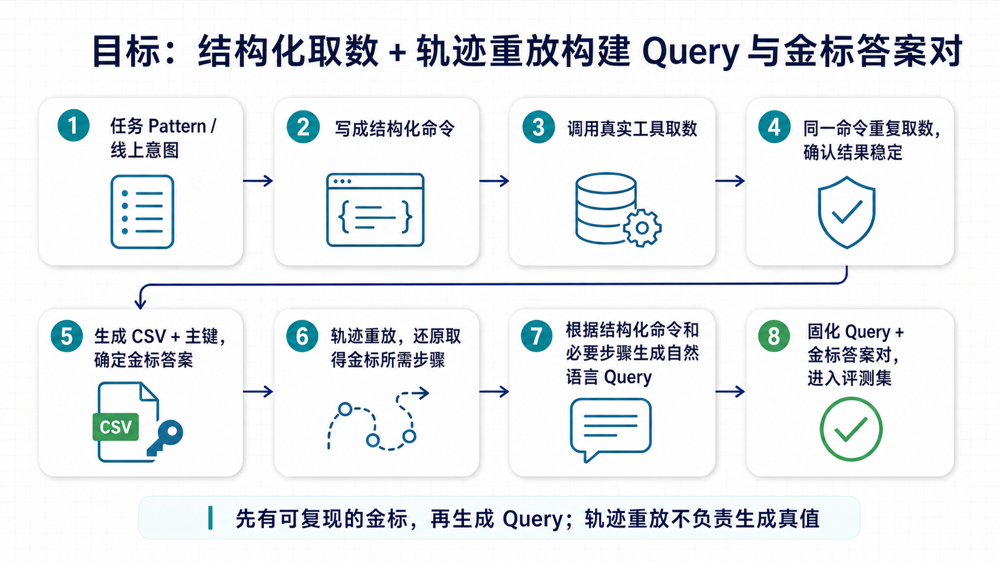

周报 · 2026.08.31
本周围绕 iFinD 评测集与金标数据建设展开。完成线上 102 条 runnable_command 的轨迹整理，确认取数类任务可以统一使用一个或多个 CSV 作为最终产物；随后对 5 条 benchmark 候选逐条检查 Query、原轨迹、工具结果、CSV 和主键，形成 case1、case2、case4 三组 Query + 金标答案，并梳理当前人工核验链路和后续稳定构建方案。
一、完成线上 102 条 runnable_command 轨迹分析
从线上数据处理链路拉取 102 条主 Agent 派发给取数 Agent 的 runnable_command，整理任务改写、模型执行过程、工具参数与返回、最终 CSV，并制作完整轨迹页面。
分析确认：这批任务的最终数据均可表示为一张或多张关系型二维表，后续评测产物可以统一收敛为 CSV。该页面主要用于查看真实执行过程和行为 Pattern，不把自动标签当作逐条结果正确性结论。
二、确定以 CSV 为核心的评测集建设方式
参与讨论并确定当前阶段优先建设评测集。每条样本由自然语言 Query、一个或多个金标 CSV、每张 CSV 的主键组成；评测时按主键对齐，不依赖行顺序，再比较行、列和单元格值。
这使数据正确性可以交给确定性 verifier 检查，LLM Judge 只处理无法完全结构化的文字说明，不再承担主要数据判分。
三、完成 5 条 benchmark 候选的验证与清洗
逐条检查原始 Query、完整轨迹、真实工具返回、最终 CSV 和主键，并重新取数核验。目前 case1、case2、case4 已形成 Query + 金标答案；case3、case5 没有强行放行，问题原因已单独记录。
| 案例 | 发现的问题 | 本次处理 |
|---|---|---|
| case1 | Query 明确要求旧版 27 行业，原 rollout 却产出 31 行；概念全集还出现用已有 390 个代码再次查询来证明“全集为 390”的循环验证。 | 按 Query 规定的 27 行业重新取数，并以完整概念集合重排涨跌 Top10；补充“停牌不计入涨跌平家数”的口径。 |
| case2 | 停牌是否计入涨跌平、板块成交占比分母以及“全 A 换手率”的市场范围没有写清。 | 只补充这三处必要口径，金标数据值不变。 |
| case4 | 原 Query 要求截至 2026-08-12 的历史披露状态，但现有接口不能稳定返回该历史快照。 | 将披露记录锚点调整为 2026-08-31，财务和一致预期仍保持截至 2026-08-12；重新执行并核验 8 张 CSV。 |
四、当前金标答案的实际获取方式
当前金标不是由 GLM-5.2 的原 rollout 直接生成。原 rollout 只用于定位问题和追溯证据；真正用于评测的金标，由人工确认日期、范围、字段和主键后，调用真实工具重新取数，对关键数据二次复取或交叉核对，再生成 CSV + 主键并逐表检查文件、行列、单位和公式。

五、当前确认的主要问题
- Query 问题：自然语言任务同时承担数据范围、指标口径、输出文件和评分规则，范围或主键只要欠定义，答案就不唯一。
- 数据源问题：部分任务要求历史时点数据，但接口只支持当前状态；这种题即使模型执行正确，也无法稳定重建金标。
- 原构建链路问题：rollout 模型可以产出候选 CSV，但不能自动保证全集完整、口径一致、公式正确和主键有效，当前仍依赖人工逐项确认。
- 扩展性问题：现有人工流程能够得到少量高质量金标，但成本高，无法直接扩展为大规模训练集和测试集生产管线。
六、后续稳定构建 Query 与金标答案对
参与讨论后的方向是：先把任务 Pattern 写成结构化命令，使用真实工具重复取数并确认结果稳定，生成 CSV + 主键作为金标；再通过轨迹重放还原取得金标所需的必要步骤，最后根据结构化命令和必要步骤生成自然语言 Query。
关键顺序是先得到可复现的金标，再生成 Query。轨迹重放只负责还原必要步骤，不负责生成真值，也不把原轨迹中的错误恢复和冗余搜索带入新 Query。

七、下周计划
- 选取可执行的任务 Pattern，先用结构化命令跑通“稳定取数 → CSV + 主键”的最小流程。
- 基于已确认金标开展轨迹重放，提取必要工具步骤，并生成对应自然语言 Query。
- 补齐按主键对齐、逐格比较的确定性 verifier，验证新样本能否直接进入评测集。